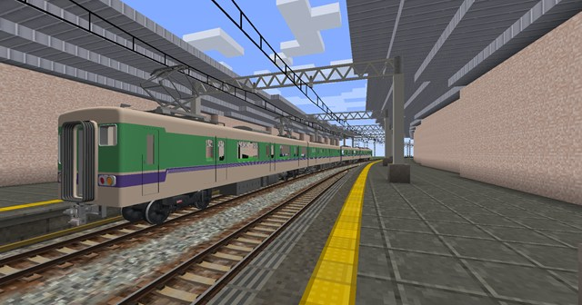
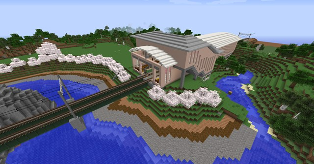
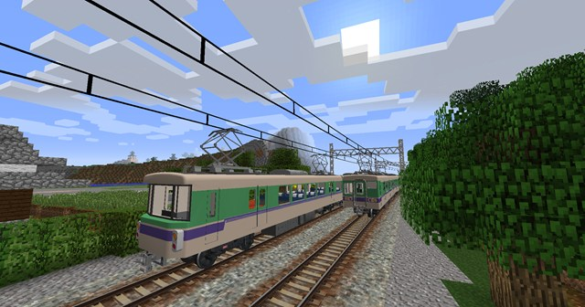
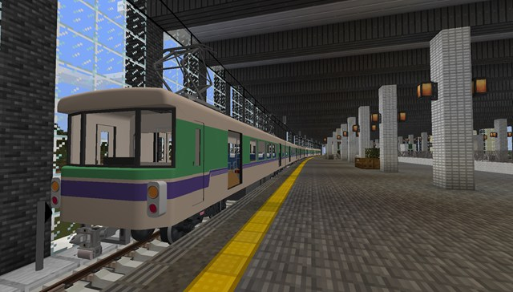
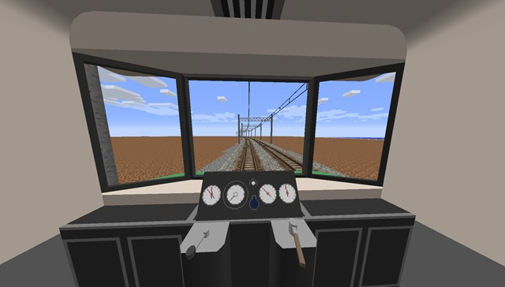
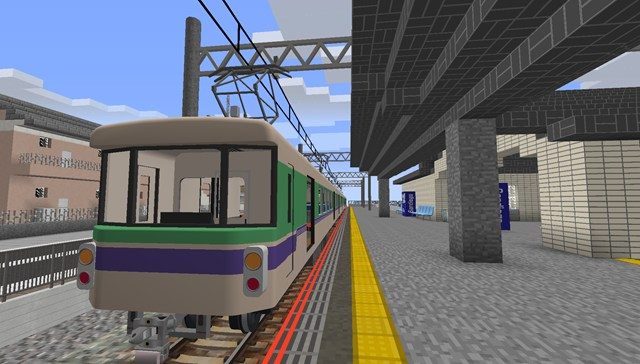
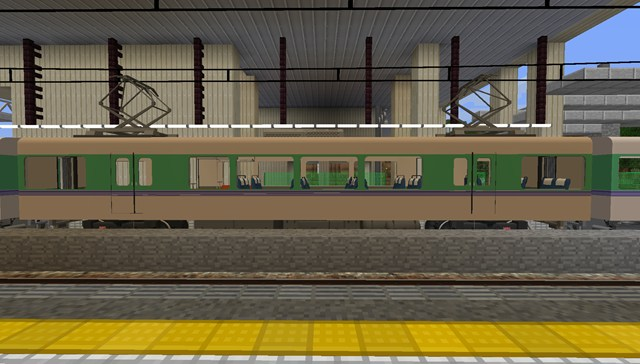
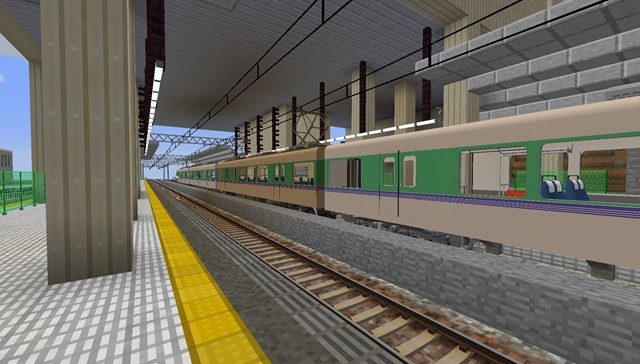

2025年の終わりを迎えて
まず，2025年にお世話になった皆さまに御礼を申し上げます．また，様々に私と向き合い，対話していただいた皆さまには特に気苦労などおかけしたかと思います．お詫びを申し上げますとともに，それでも向き合い続けていただいている方々に深く御礼を申し上げます．
2025年は個人的には静かな年だったと思います．それもそのはずで，卒業研究をやったりいろいろしたりしてて，なかなかまとまったこともできず…
1月はSimutrans井戸端会議に参加してました．なんか色々とクソムーブした気がするけど(その節は本当に申し訳ない)，人と対面で会うのって大事だなと，今改めて思ってます．またやんのかやらんのかわからんですが，関東開催であれば積極的に，そこ以外だったら調整がつけば行こうかなと思います．Simutransで言うと，ロードトレインforpak128.japanセットを公開したのも1月でしたね．2月は「千葉県知事選挙」と称する現代アート展が千葉県全県で展開されました．この催事は現実の選挙を模して「投票所」が開設されたようで，私も行ってきました．まるで実際の選挙なのではないかと，驚かざるを得ない品質の投票所で大変感嘆いたしました．報道機関もタイアップして番組を組んだみたいで，この現代アート展の規模の大きさが伝わってきました．3月は（地味に初公開なのですが）個人ｐｊの「漆讌市」を始めました．今はこんな具合です．


それから，電子工作でタイムレコーダの印刷機構部の外部信号による制御に取り組んでました．4月は何もやってないので飛ばしまして，5月は2ドアの電車を作りました．(上の写真にもありますね)これです．


6月はまた何もやらず，7月は…なんか阪神がマジック点灯して嬉しがってますね．8月は末日に名古屋でした．翌日に京都だったのですが，いろいろと作業してたり楽しくないことが起きたりだったので飛ばします…はい… 9月はなんかHoi4にハマってますね．あと，電子工作の仕掛品を完工させてました．乾電池で動く時計をUSBバスパワーで動かさせるだけの簡単なことだったんですが，半年間くらい放置でしたね… 10月はメインパソコン(ZenBook)がおかしくなって大変でした．11月はまた京都に出かけ，12月は埼玉に出かけました．（行徳→）春日部→大宮→内宿→桶川→モラージュ菖蒲→久喜（→行徳）でしたが，内宿駅→桶川駅の難易度が★★★★✩なのでおすすめしません．（この区間，バス本数はまあまあ少ないし土曜休日運休）
一年を振り返るとこんな感じです．ざっとなのと行徳であったことはほとんど書いていないので，わりかし少ないですし多分何かを忘れてます．作ったものは例年に比べて少ないと思います．卒業論文とかでだいぶしんどい思いをしていたのでなおさらですし，10月に入ってから後輩の気苦労でだいぶやられていたので色々とおかしくなってたんじゃなかろうか，とも思います．ご迷惑をおかけしていたら申し訳ありません．
2026年ですが，私はTwitterとかで創造をおやすみする趣旨のことを言いました．ですが，あのあといろいろな変化がありまして，まあ超のんびりでやっていこうかなと思います．超のんびりになる理由というのがこれです：
１．社会人１年目なので果たしてそういうことをやってる余裕があるのかわからん
２．生来の物書きである上に，ここしばらくで(卒論以外でも)物書きをする機会がだいぶ増えた
いい機会なので，創造についての個人的な所感を述べると，現地調査や徹底的な再現を行う方々と，感覚でゲーム的な世界観と現実的な世界観の入り混じった創造をする方々が並立すべきである，との考えです．現実のような世界をその創造で構築したい方もいらっしゃるでしょうが，数の大小はわからねどある程度ゲーム的な世界を構築したい方々がいらっしゃることは，その界隈を眺めていると感じるところです．さらに言えば，年代が進めば進むほどに現実からは離脱していく以上，未来的なものを創造するとなるとゲーム的な世界観が入り混じってくることは避けがたいことではないかとも思います．現実では徹底的にそのときの場で合理的な判断のもと企業活動，或いは行政活動として交通機関が整備されますが，ゲームは現実とは異なる世界線をたどります．そうであれば，そのゲームの中で使えるものを作ることは発想としては自然であり，現実に存在していなければゲーム的世界観で創造されることが当然です．そうである以上は，現実派とゲーム派の並立は不可避であり，そうであるべき状態です．
私はというと，脳内に未来的な世界観，つまりネオ日本国有鉄道やネオJRを飼っていて，そいつらの世界観を出しつつ作るほうが割と楽だったりしますし，(たまに作っていて思うことですが，)現実の車両を作るのは結構大変です．そりゃそうで，現実の車両を作る人は小さなピクセルアートに押し込むことなんぞ考えていないので，きちんと観察していると相当な取捨選択が待ち構えています．この取捨選択が難しいのです．自分の想像で作るときにはピクセルありきでやれますが，現実のを作るときにはこれが難しいわけです．それで普段はゲーム的な世界観で色々やっている，現実派作品とゲーム派作品は自分の中ではあまり並列していない，そういうわけです．
繰り返しますが，これは界隈全体で並列しているべきなので，全員がかくあるべき，ということではありませんし，かくあらざるべきということでもありません．それだけ，創造というのは本来自由なのです．
…とまあ，クソポエムを書いたところで2026年はやってきます．ゴミみたいな年始にならないことを祈って，年末のご挨拶とします．皆さま良いお年を．